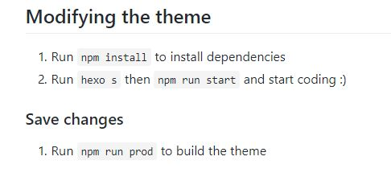
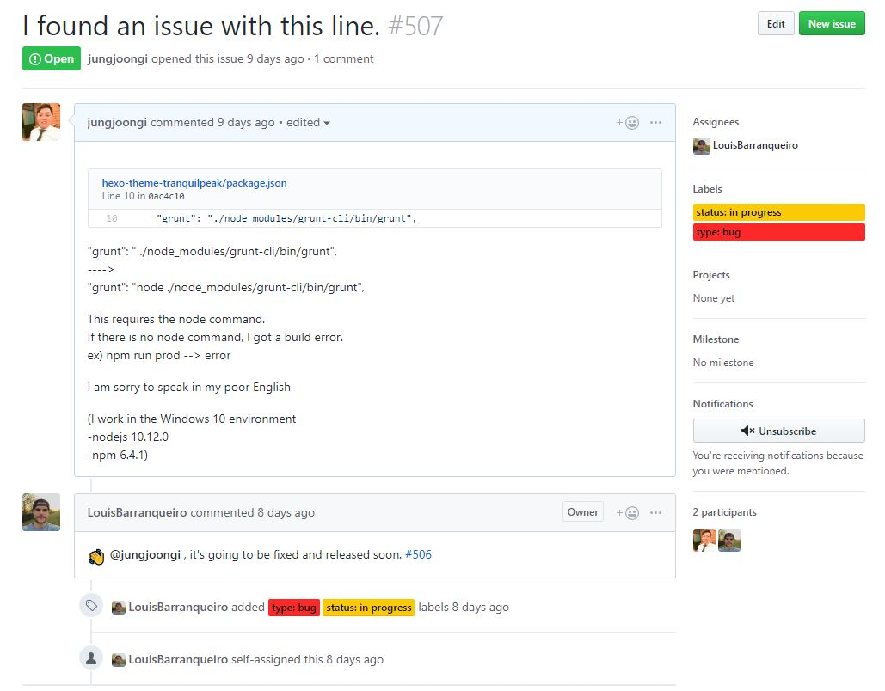

*파트너스 활동을 통해 일정액의 수수료를 제공받을 수 있음
tranquilpeak 테마의 빌드이슈를 공개합니다.
약 한달전부터 hexo 개발블로그를 개설해 공부해가고 가장 마음에 들었던 tranquilpeak테마를 적용하였지만 생각보다 까다로운 여석인지 시작부터 순탄치 않게 되었습니다. 그리고 일주일이상을 헤매다 나만 이상한건지 구글링을 해도 해결점이 나오지 않았습니다. 그리고 소스파일을 하나하나 뜯다가 테마 빌드오류가 발생했다는 사실을 깨달아 해결점과 함께 그 과정을 공개합니다.
#기본적인 세팅 & 참고
일단 기본적인 세팅은 tranquilpeak제작자인 LouisBarranqueiro의 git을 참고하면 도큐먼트 문서가 있는데 보고 따라하는것이 가장 간편하다.
그외에 한글로 된 설명이 필요하다면 태태태의 개발공간을 참고해도 좋다. 잘 정리되어 있다.
# build? 그리고 오류
일단 이 테마는 build를 내부적으로 해야 작동하는 테마이다.
이전에 다른 테마를 사용할때에는 그냥 적용하면 됐었지만, css나 js등 테마의 자원을 변경했을때에는 별도의 build작업이 필요하다.
그런데!! 문제가 생긴다. build가 되지 않는것이다.
일단 도큐먼트 문서를 보자.
도큐먼트 문서중 자원변경시 해야할일
외부 라이브러리를 추가/삭제할때에는 npm install 을 통해서 모듈을 설치/삭제를 해주어야한다. 그렇지만 이것이 빌드는 아니다.
LouisBarranqueiro 는 테마를 수정했을때에 hexo s명령어를 실행해 local환경에서 서버를 띄어보게 하고 npm run start 명령어를 실행하여 변경된 모듈 & 자원들을 임시저장소로 옮겨 로컬환경에서 로드시키도록 했다.
그렇지만 아래와 같은 오류를 반환할 뿐 아무일도 일어나지 않는다.1
2
3
4
5
6
7
8
9
10
11
12
13
14
15
16
17
18
19
20npm ERR! code ELIFECYCLE
npm ERR! errno 1
npm ERR! hexo-theme-tranquilpeak@3.0.1 grunt: `./node_modules/grunt-cli/bin/grunt "default"`
npm ERR! Exit status 1
npm ERR!
npm ERR! Failed at the hexo-theme-tranquilpeak@3.0.1 grunt script.
npm ERR! This is probably not a problem with npm. There is likely additional logging output above.
npm ERR! A complete log of this run can be found in:
npm ERR! C:\Users\name\scoop\persist\nodejs\cache\_logs\2018-10-29T08_21_56_667Z-debug.log
npm ERR! code ELIFECYCLE
npm ERR! errno 1
npm ERR! hexo-theme-tranquilpeak@3.0.1 start: `npm run grunt -- default`
npm ERR! Exit status 1
npm ERR!
npm ERR! Failed at the hexo-theme-tranquilpeak@3.0.1 start script.
npm ERR! This is probably not a problem with npm. There is likely additional logging output above.
npm ERR! A complete log of this run can be found in:
npm ERR! C:\Users\name\scoop\persist\nodejs\cache\_logs\2018-10-29T08_21_56_709Z-debug.log
짧은 영어탓인가 구글링을 해도 소득은 많이 않았다. 그래서 소스를 하나씩 까보기 시작했다.
내가 npm run start 를 하게되면 package.json 파일의 내장스크립트가 구동하도록 로직이 짜여져있다.
1 | { |
npm run xxx라는 명령을 실행하면 상위에 미리 짜여져있는 로직이 실행이 되는것이다.npm run start명령을 하면 아마도(?) Gruntfile.js가 메인이되어 내부적 호출을 하는 스크립트들이 실행이 되는것같았다.
결국에는 npm run start가 npm run grunt 명령과 같은 셈인것 같았다.
그리고 이미 흐름을 보면 알겠지만 nodejs로 구동이 되고있는것을 알수가있다.
./node_modules/grunt-cli/bin/grunt의 내부소스를 봐도 js소스로 구성되어있다. (확장자가 js는 아니지만 js로 되어있다.)
#해결방법
방금 본것과 같이 nodejs가 관여하고있는 라이브러리 및 자원들이다.
nodejs로 서버를 실행해본 사람들은 알겠지만 실행을 하기 위해서는 앞에 node명령어가 필요하다는 것을 알고있을 것이다.
그래서 이와같이 해결해봅니다.
1 | { |
package.json파일에 짜여져있는 로직에서 grunt파일을 실행할때 node를 통해 실행하도록 하는것이다.
이렇게 변경후 저장한 다음 npm run start명령을 실행하면 자연스레 실행이 되는것을 확인할 수 있을 것이다.
그리고 local서버에서는 실시간으로 적용되기때문에 확인을 할 수가 있고 자원을 변경한 후에는 npm run prod명령을 통하여 테마 폴더로 배포가 될것이다.
그러면 root폴더로 이동하여 hexo generate -d 명령을 수행하면 public폴더로 배포가 되며 블로그에 정상 배포가 되는것을 확인할 수 있을것이다.
#이슈제기 및 마무리
나는 이것을 발견하여 tranquilpeak제작자인 LouisBarranqueiro의 git로가서 이슈를 제기하였다.
테마 제작자인 LouisBarranqueiro에게 이슈제기
짧은 영어지만 이슈를 제기하니 1-2일 이내로 답변이 왔다. 아마 다음버전 배포할때에는 수정이 되어 배포가 될 것같다.
이런 이슈들을 접하다보니 나도모르게 많이 배워가는것 같다.
언젠가 나도 라이브러리나 오픈소스를 배포할날이 올까? 아직 멀었지만 그런 날을 기대하며 개발을 하러간다.
읽어주셔 감사합니다.